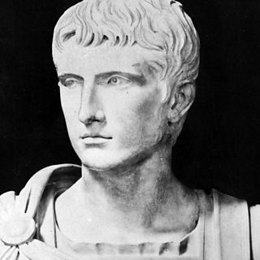
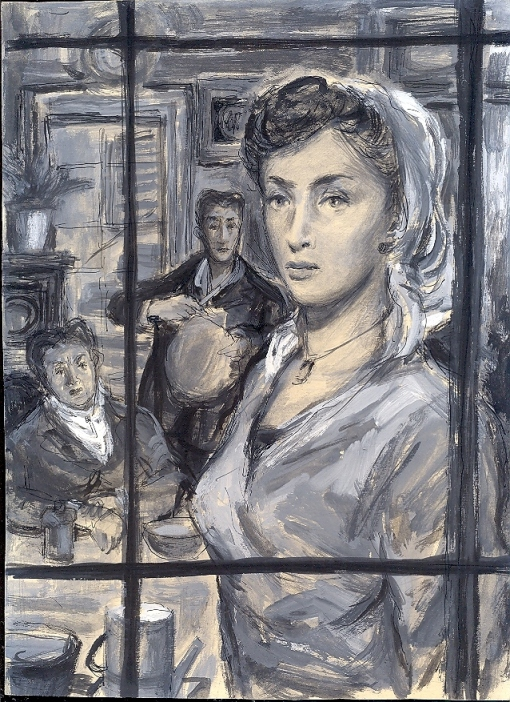
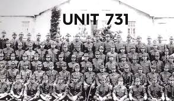

Portfolio di Luca Porta |
|
Ciao a tutti, io sono Luca Porta e questo è il mio portfolio di educazione civica. |
|
Vogliamo essere davvero buoni ed onesti cittadini? Ecco QUAun'idea che potrebbe risollevare la nostra società | |
Ecco QUA per voi la trama di un libro molto significativo che ho letto sulla storia che succede alla famosa strage di Paolo Borsellino |
|
Augustan Age was a very important period for the roman history. HERE you can find something about it. |  |
 | La mafia è problema che ogni giorno distrugge la nostra società, ma come è costituita? Ecco QUA qualche informazione a riguardo. |
La donna, purtroppo è una figura che, anche ultimamente, viene spesso sottovalutata perché si crede abbia una scarsa capacità nei lavori pesanti. |  |
Le nuove tecnologie sono molto utili per il nostro futuro, ma possono anche essere molto pericolose. EccoQUA un elenco dei pericoli di reti ed il modo per evitarli |
|
Surfing the net can lead to physical and mental problems, especially for the kids. HERE you can find something about it. | |
Ecco QUA un estratto su Walter Tobagi |
|
Ecco QUA un estratto sull'Unità 731 |  |
Per tornare alla repository del mio Portfolio su github cliccare QUA |
|